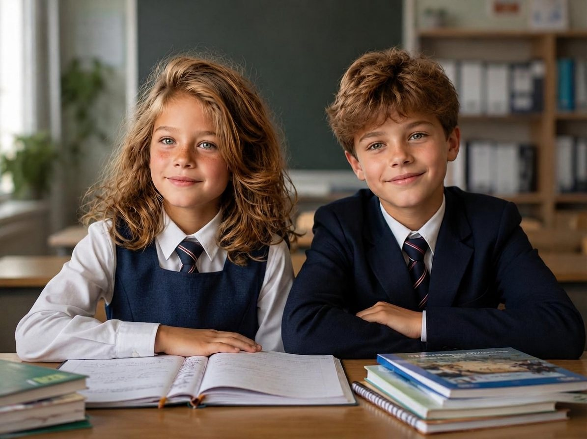
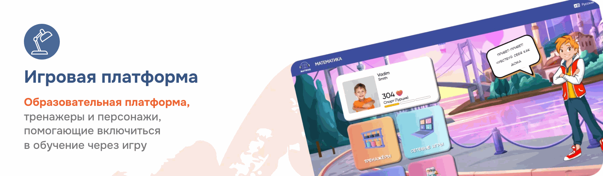
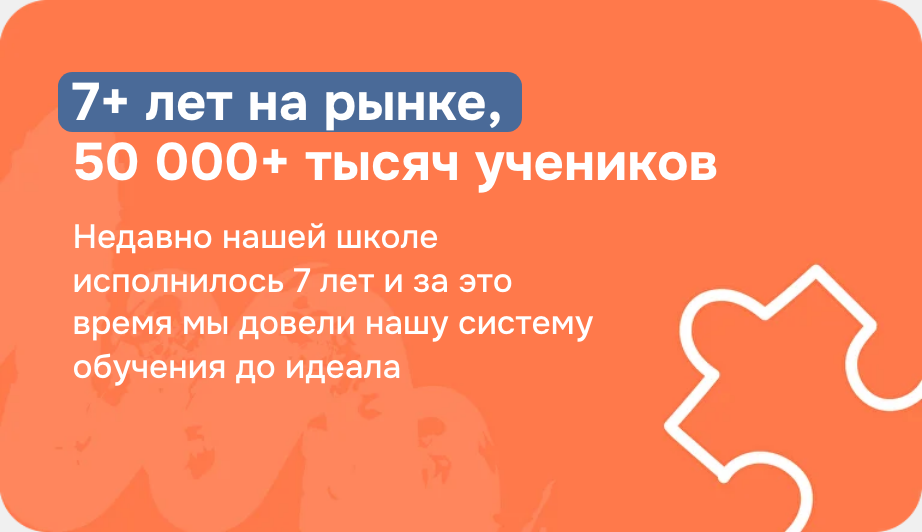
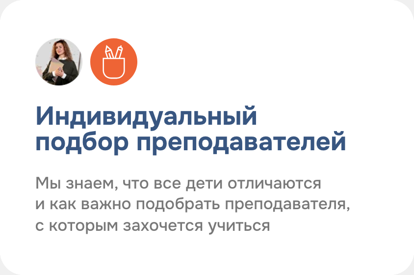
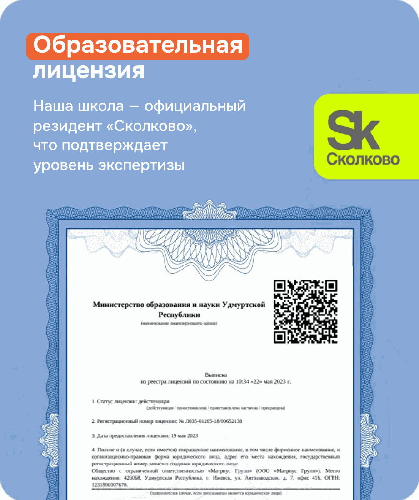
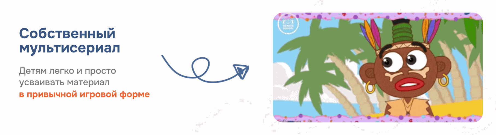

Повысим успеваемость ребёнка на +0,7 балла за месяц
Улучшаем память и внимание ребёнка на бесплатном уроке по скорочтению — онлайн, один на один с педагогом.
Записаться на бесплатный урок
На что влияет навык скорочтения
Выполняет домашку в 2 раза быстрее
Понимает условие с первого раза
Уверенность на ВПР и контрольных
Меньше расходов на репетиторов
Свободно отвечает у доски
Сам берёт книгу
Главный результат — оценки в дневнике
За месяц регулярных занятий средняя оценка ребёнка вырастает на 0,7 балла. Тройка превращается в четвёрку, четвёрка — в уверенную пятёрку. Это не маркетинг — это диагностика успеваемости 10 000+ учеников Matrius.
Внутреннее исследование онлайн-школы Matrius, 2024–2025 годов.
Что будет на бесплатном уроке
- 1Проводим бесплатную диагностику чтения
- 2Замеряем скорость и сравниваем со школьным ориентиром класса
- 3Проверяем понимание и память — вопросами и пересказом
- 4Находим причину: техника чтения, внимание или память
- 5Даём план на месяц — он остаётся у вас
На бесплатном уроке вы узнаете, как скорочтение тренирует 6 навыков, которые работают за партой и в жизни
Внимание
Удерживать фокус даже на скучном параграфе и не уплывать мыслями к середине абзаца.
- Главный навык
Скорость чтения — в 2 раза выше
Без потери понимания. Замер на первом уроке, замер через месяц — разницу видит сам ребёнок.
Память
Запоминать прочитанное с первого раза: стихи, правила, формулы, исторические даты.
Понимание
Главная мысль абзаца, вывод автора, скрытый смысл условия задачи — то, без чего страница превращается в набор букв.
Поле зрения
Глаз охватывает не одно слово, а строку целиком. Меньше движений — выше скорость.
Скорость мышления
Быстрее понял — больше времени на решение. Контрольная перестаёт быть гонкой со временем.
Почему родители выбирают Matrius






Запишите вашего ребёнка на бесплатный урок по скорочтению уже сегодня
Замерим скорость чтения и понимание текста, найдём причину проблем и дадим план на месяц. Бесплатно и без обязательств.